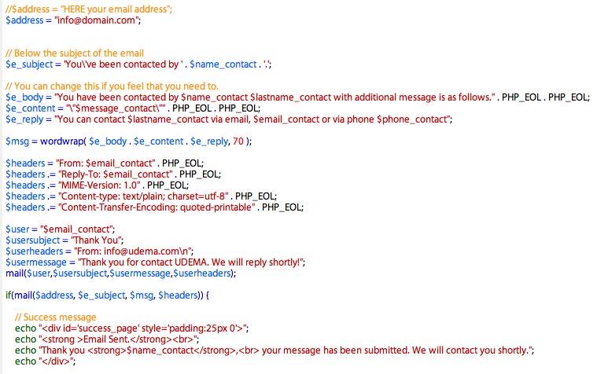

Documentation by “Ansonika” v1.2
“FOOGRA - HTML Site template”
Created: 14 NOV 2019
Lat udpate: 19 FEB 2019
By: Ansonika
Thank you for purchasing my theme. If you are happy with the theme, please TAKE A MOMENT TO RATE IT from your DOWNLOADS PAGE. Thanks so much!
Table of Contents
- HTML Structure
- CSS Files, Structure and basic modifications
- PHP contact form, newsltetter form and submit restaurant
- JavaScript
- Sources and Credit
- UPDATES
A) HTML Structure - top
It's based on Boostrap 4 framework grid. It's ULTRA RESPONSIVE!!. The item comes with SASS files for the primary styles.
B) CSS Files Structure and basic modfication - top
The css files are inside the css folder (not minified and minified versions included) .To modify colors, typografy, button style ecc....find the realtive comment line in style.css. We reccomend to apply every changes in css/custom.css in order to makes future updates easly to apply. Below how the main style file is organized:
1. SITE STRUCTURE and TYPOGRAPHY
- 1.1 Typography
- 1.2 Structure
- 1.3 Main Menu
- 1.4 Heros/Above the fold
2. CONTENT
- 2.1 Home
- 2.2 Carousel
- 2.3 Strip item
3. COMMON
- 3.1 Spacing
- 3.2 Buttons
- 3.3 Misc
- 3.4 Footer
- 3.5 Magnific Popup CSS
- 3.6 Sing In Modal
- 3.7 Misc
- 3.8 Cookie bar
Note 1) To increase the Page Speed the we create a customized version of the Bootsrap Libray removing the not used style and inclued as default.
You can enable styles by uncomment in bootstrap_customized.css the styles needed in your project, then reminify the file. 2) To increase the Page Speed we inclued the main site css style in css/style.css; for specific styles related and present only on specific pages, we include create dedicated css files.
Example for listing.html (and listing variation pages): <!-- SPECIFIC CSS -->
<link href="css/listing.css" rel="stylesheet">The item comes with SASS files. 3) Same logic for the some js files; js/common_func.js contain the scripts common for all pages of the template. Specific pages, have dedicate js files. Example for listing.html (and listing variation pages): <!-- SPECIFIC SCRIPTS -->
<script src="js/sticky_sidebar.min.js"></script>
<script src="js/specific_listing.js"></script>
Change the logo
To change the logo, simply use your PNG24 file (suggested logo height is 35/40px) or better use an svg version. Below how is coded
<div id="logo">GOOGLE MAP API (if the Google map works locally but does not works once the site will be online)
<a href="index.html">
<img src="img/logo.svg" width="140" height="35" alt="" class="logo_normal">
<img src="img/logo_sticky.svg" width="140" height="35" alt="" class="logo_sticky">
</a>
</div>
Google requires an api key for the Google map. They require a credit card for a new api..don’t worry there cost is very very low quantity of views or free for a particular limit https://cloud.google.com/maps-platform/pricing/sheet/
You can create your own "Standard api key" here
by clicking on "GET KEY" BUTTON (on Authentication for the standard API—API keys section),
and follow the steps. https://developers.google.com/maps/documentation/javascript/get-api-key#key Here some additional info on how to create an API KEY http://thegrue.org/google-map-javascript-api-key/
Then replace at the bottom of every page that use Google map, this line
<script src="http://maps.googleapis.com/maps/api/js"></script> OR <script type="text/javascript" src="http://maps.googleapis.com/maps/api/js?sensor=false"></script>
with your api key included, like the example below
<script src="http://maps.googleapis.com/maps/api/js?key=YOUR_API_KEY"></script>
NOTE: if you apply an api key, the map locally does not load. You must upload your site.
Home with video header (fallback with a background image in tablets and mobile: these devices does not support video autoplay as background due to reduce bandwith consume)
1)Save you mp4 and ogv video in the video folder.The name of the files must match the datasource tag:
Example
data-teaser-source="video/intro" (folder/name_files)=
intro.mp4
intro.ogv You can change also the opacity in style.css
video {
position: absolute;
top: 0;
bottom: 0;
left: 0;
right: 0;
opacity: 0.6;
}
2) To change the fallback background image for mobiles and tablets open css/style.css and find this class (video on background is disable on tablet and mobiles due to bandwith consume limit):
@media (max-width: 1024px):
#hero_video{ background: #ccc url(../img/home_section_1.jpg); background-size:cover; background-position: center bottom;}
How Lazy Load Works
1) Owl Carosuel Lazy Load <img src="img/lazy-placeholder.png" data-src="img/location_1.jpg" class="owl-lazy" alt=""> 2) Lazy load images <img src="img/location_list_placeholder.png" data-src="img/location_list_1.jpg" alt="" class="lazy"> or use for the src attribute a 1px gif transparent <img src="data:image/gif;base64,R0lGODlhAQABAIAAAP///wAAACH5BAEAAAAALAAAAAABAAEAAAICRAEAOw==" data-src="img/cards_all.svg" alt="" width="198" height="30" class="lazy"> You can delete the "src" attribute and leave only "data-src", the page gain in performance with less
request to the server but the code result not W3C validated due the "src" attribute result missing.
Control the opacity of the header images in the inner pages
You can control the opacity of the header images via data attribute as the example below: .<div class="opacity-mask" data-opacity-mask="rgba(0, 0, 0, 0.5)">
Change the bakcground image in the inner pages
You can control the background image of the headers via data attribute as the example below: <div class="hero_single inner_pages background-image" data-background="url(img/hero_general.jpg)">
Address Autocomplete with Google API
IMPORTANT! It requires an API key (see the section Google Map API); locally the autocomplete does not works, you should apply the api key on the footer page script then upload the site to see it working. <script async defer src="https://maps.googleapis.com/maps/api/js?key=YOUR_API_KEY&libraries=places&callback=initMap"></script>
Set up site launch page located in site_launch folder
Open functions.js and find this line of code:
SET THE DATE
Open site_launch/js/functions.js and find this line.
var target = new Date("July 15 2014 13:30:00 GMT+0100"); //replace with YOUR DATE SET NEWSLETTER EMAIL
Open site_launch/assets/newsletter.php and find this commented code.
//$address = "your email address";
$address = "test@domain.com";
How GOOGLE MAPS works
Let's take as example the map used in grid-listing-filterscol-map.html. Open js/main_map_scripts.js. 'Marker': [
{
type_point: 'Italian Food',
name: 'Restaurant Name',
location_latitude: 48.865633,
location_longitude: 2.321236,
map_image_url: 'img/thumb_map_single_restaurant.jpg',
rate: 'Superb | 7.5',
name_point: 'Restaurant Name',
get_directions_start_address: '',
phone: '+3934245255',
url_point: 'detail-restaurant.html'
}, type_point = restaurant category name = restaurant name location_latitude= the latitude of Arc de Triomphe
location_longitude= the longitude of Arc de Triomphe map_image_url: the thumbnail inside the infobox rate= rate
name_point= the title in info box
get_directions_start_address= get directions start address (leave empty or specify the start address)
phone: phone number url_point= the link in the button The marker/pins are located in img/pins folder.
Leaflet OpenStreet Map + MapBox
The item comes with another Interactive Map Solution. It a bit different from the Google Map Api. Leaflet + OpenStreetMap is totally free; the implementation with Mapox requires registration and an API access token key (free untill 750,000 user views/requests; more info at https://www.mapbox.com/pricing/) Below we examine how it works, let's take as example tours-half-screen-map-leaflet.html file. 1) leaflet_half_screen_func.js BELOW HOW TO CENTER THE MAP AND MAIN MAP SETTINGS var map = L.map('map', {
center: [48.865633, 2.321236],
minZoom: 2,
zoom: 13
}); MAPBOX ACCESS TOKEN (https://www.mapbox.com/ and create your access token) L.tileLayer( 'https://api.tiles.mapbox.com/v4/{id}/{z}/{x}/{y}@2x.png?access_token={accessToken}', {
attribution: '',
id: 'mapbox.streets',
accessToken: 'Your Mapbox Access Token',
subdomains: ['a','b','c']
}).addTo( map ); 2) leaflet_markers.js
In this file there are all the markers/points data:
"id":1, //ID to use in the html page to view the infowindow of the point from the list
"type_point":"Pizza", //Type Point
"location_latitude":48.865633, //Lat
"location_longitude":2.321236, //Long
"map_image_url":"img/thumb_map_single_restaurant.jpg", //Thumb
"rate":"Superb | 7.5", //Rate
"name_point":"Restaurant Name", //Name Point
"get_directions_start_address":"", //directions start address (leave empty or specify the start address)
"phone":"+3934245255", //Phone
"url_point":"restaurant-detail.html" //Specific poin url page 3) How to use Leaflet + OpenStreetMap only
Just simply replace this line on footer <script src="js/leaflet_map/leaflet_half_screen_func.js"></script> into <script src="js/leaflet_map/leaflet_no_mapbox_half_screen_func.js"></script> TOOL TO CREATE COORDINATES: https://www.latlong.net/convert-address-to-lat-long.html
THE GRID
Please refer to this documentation Boostrap
C) PHP files: Contact form - top
All the files you need are located in assets folder. If you need to change the allert messages open assets/validate.js. Below an example taken from contact.php; all the files are well commented.

Contact form
It's the same logic and script of check newsletter. If you doesn't recieve the email please first check:
1) Your spam folder
2) If you hosting requires special settings (SMTP Authentication is not supported by the script)
3) If your email has to be managed from the same hosting provider
4) Set the permission of the asset folder on your host to 755 your FTP client
D) JavaScript - top
This theme use these Javascript (minified versions included). I've included the common theme scripts in a single file for a fast edit and load (or if you prefer you can find the same js in separate files in js folder). Each page could have specific js related to the page.
common_scripts.js content:
- jQuery 3.3.1
- Lazy load images
- Owl Carousel
- Boostrap.bundle.js
- MagnificPopup.js
- jQuery Show hide passoword
E) Sources and Credits - top
I've used the following images, icons or other files as listed. For the js listed below, you can find the more documentation on the relative sites.
- Twitter Bootstrap
- Jquery
- Owl carousel
- JQuery UI Datepicker
- Theia Sticky Sidebar
- Modernizr
- Magnific popup
- Range slider
- Isotope
Images are not included.
E) Updates - top
v.1.2 19 FEB 2019- Added Leaflet Open Street Map (+Mapbox)
- Added Detail page with Fixed Booking
HOW TO UPDATE FROM PREVIOUS VERSION 1) Added Leaflet Open Street Map (+Mapbox) A) New css file css/leaflet.css B) New Folder in js folder > leaflet_mapv.1.1 29 November 2019
C) Copy the new html pages 2) Added Detail page with Fixed Booking A) New section in css/detail-page.css > /*-------- Fixed Booking Panel--------*/ B) New section in js/specific_detail.js > // Reserve Fixed on mobile C) New page detail-restaurant-3.html
- Added and Half Screen Map page
- Added Testimonials (index-2.html)
- Added Address Google API Autocomplete (index-5.html)
- Added Styled Select Drop Down
- Added Delivery/Take away variation for the following pages: Home page, Listing, Detail Page, Booking and Confirm
HOW TO UPDATE FROM PREVIOUS VERSION
- Half Screen Map page
1) Takes as reference listing-map.html
2) Update the follwong css/sass files: bootstrap_customized.css + bootstrap_customized.min.css, listing.css
- Testimonials
1) Takes as reference index-2.html
2) Update css/home.css
3) Copy the 3 new avatar images
- Address Autocomplete
1) Takes as reference index-5.html (API Key required: view the section "Google Map API")
- Styled Select Drop Down
1) Update the following files: js/common_scripts.js + js/common_scripts.min.js, css/style.css (or only the section
/* Jquery select */)
2) Update js/common_func.js (or add only // Jquery select $('.custom_select select').niceSelect(); )
- Added Delivery/Takeaway variation
1) Takes as reference the follwing pages: index-7.html, grid-listing-filterscol-delivery.html,
detail-restaurant-delivery.html, booking-delivery.html, confirm-delivery.html.
2) New css files css/detail-page-delivery.css
3) Update the following files: css/style.css (new classes .take, .deliv), css/booking-sign_up.css,
js/specific_detail.js.
Maybe you are interested in


Once again, thank you so much for purchasing this theme. Please take a moment to rate it from your Downloads page.
Need support?
For support contact me using the form on my profile page with subject [ThemeForest Support] Template name, or use the Support Tab on the item page. You will receive an answer within 24-48 hours (working days) GMT +1.- I only provide support for fixing bugs or small issues on my items.
- I don't provide free support for additional custom modifications to the items.
- Please provide your site link, screenshots and other information about your issue.
- Envato support terms
Need customization or availability for freelance projects?
Just send an email via profile page form, we will check our availability; please don't forget to specify:- if you are a company, agency or private user
- all the information about your projects, needs, site urls, project sheet, etc..
- from which country you are
- if you have a deadline
- if you have basic knowledge of HTML , CSS, JS, PHP
Ansonika